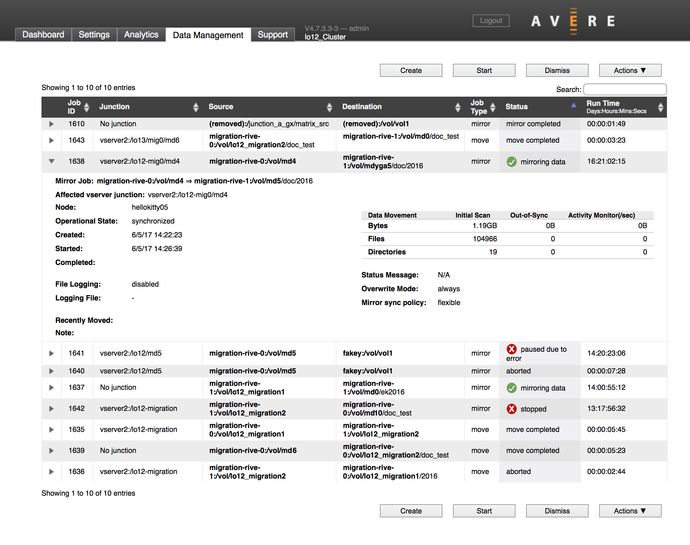
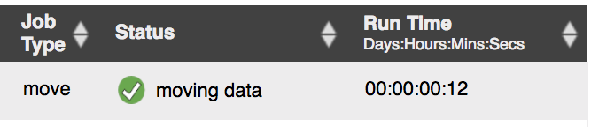
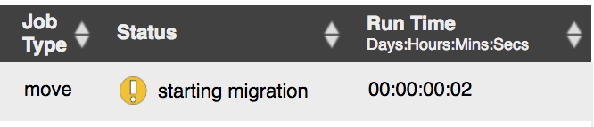
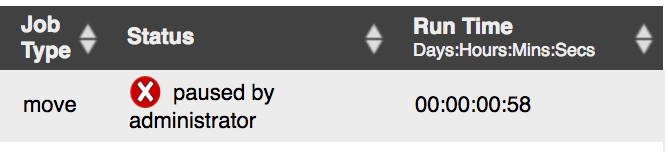
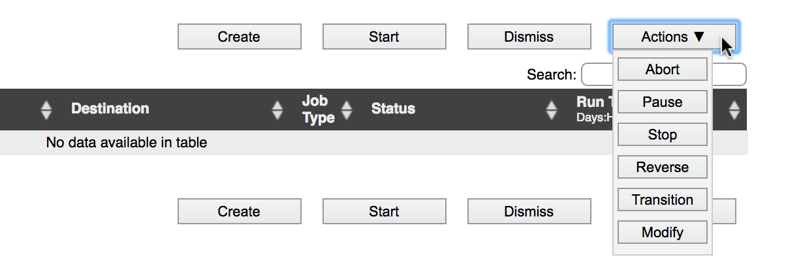
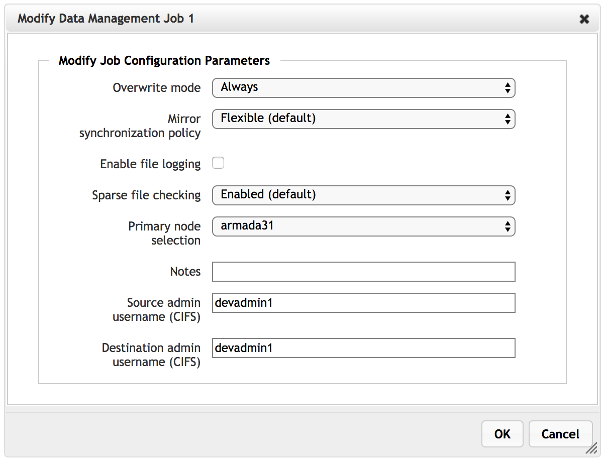
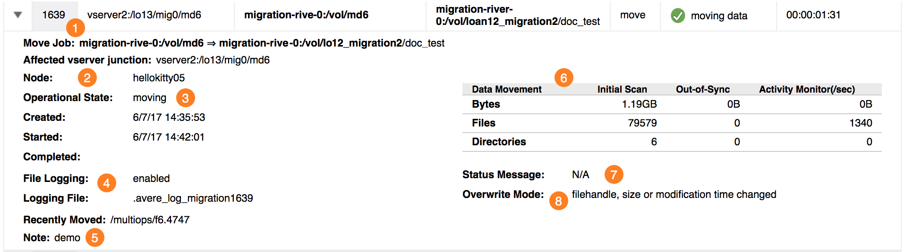
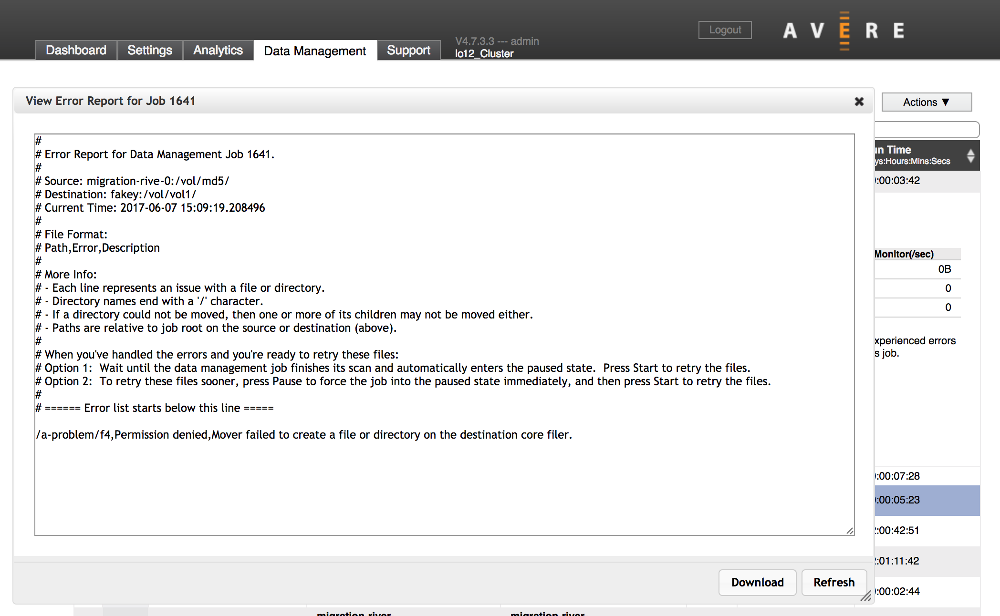

Monitoring Data Management Jobs¶
You create, modify, and track FlashMove and FlashMirror jobs from the main Data Management tab in the Avere Control Panel.
{kind=link}
{kind=link}
{kind=link}
{kind=link}
Job Status Icons¶
Graphic icons appear in the Status field of the data management job list. The icons indicate the general status of the job:
- Green check mark - The job is proceeding normally.
- Yellow exclamation point - The job is proceeding, but might need attention. This icon is used to alert the administrator to normal state transitions, but it also can indicate an out-of-sync mirror, a job that has skipped files due to errors, or other recoverable situations.
- Red X - The job is paused or stopped.
Status icons do not appear for jobs that complete normally or are aborted.
  {kind=link}
{kind=link}
{kind=link}
Data Management Actions¶
Use the buttons on the Data Management page to create, start, stop, and change jobs, and to remove them from the table. For convenience, the buttons appear both above and below the table of jobs.
{kind=link}
To use the buttons, select a job in the list by clicking it, then click the button for the action.
These buttons appear on the page:
- Create
- Launches the Add New Data Management Job wizard to create a new job. Read Creating a New FlashMove or FlashMirror Job to learn more. (You do not need to select a job before clicking this button.)
- Start
- Starts a stopped or paused job. (Use this button to start a newly created job with an initial state of “stopped”.)
- Dismiss
- Removes an inactive job from the Data Management page. The job must be completed or aborted before you can remove it from the list. Read Remove a Job from the List for step-by-step instructions.
- Actions
- Click the Actions button to open a menu of additional buttons.
- Actions: Abort
- Permanently deactivates a job. An aborted job cannot be restarted.
- Actions: Pause
Temporarily interrupts the migration job. Some job parameters can be changed while the job is paused. Read Modifying a Stopped Job for details.
A paused job retains the state of the file transfer. For FlashMove, when you restart a paused job, it picks up where it left off instead of starting from the beginning and rechecking or recopying all files.
In the case of a FlashMirror job, files that were previously copied to the mirror destination volume continue to be updated with new changes from the source. A mirror job can only be paused before it is synchronized. For details, see Mirror Actions.
- Actions: Stop
Interrupts the data management job and discards any progress already made.
If you restart a stopped job, any files that were already copied must be rechecked and might need to be recopied. Stopping the job removes the record of which files have been compared and updated. (When the job starts, its Overwrite Mode controls how files are compared and copied; you can change the overwrite mode on a stopped job.)
For a FlashMirror job, no file updates are written to the destination volume while the job is stopped.
You can changes some settings on a stopped job; see Modifying a Stopped Job for details.
Actions: Reverse
Swaps the primary volume and secondary volume in a FlashMirror.
Note that reversing a mirror immediately reverses the data access policies, which can lead to access changes unless you copied the access policies from the original data.
- Actions: Transition
Effectively changes a FlashMirror job into a move. The Avere cluster completes any current synchronization, stops updating files in the primary location (the “source”), and moves the namespace junction to reference the secondary location (the former “destination”).
This action can be used only on FlashMirror jobs.
- Actions: Modify
- Use this button to change settings on a FlashMove or FlashMirror job that is stopped or paused. Details about this feature are described in Modifying a Stopped Job, below.
Modifying a Stopped Job¶
While a job is stopped or paused, some settings can be changed. Select the job and click Modify on the Actions menu.
{kind=link}
Settings that can be changed on a stopped job include:
- Overwrite mode
- Mirror synchronization policy
- File logging (enable/disable)
- Log file name (you can start a new log file by replacing the old one here)
- Sparse file checking
- Primary node selection
- Notes
- SMB administrator username (source and destination)
Understanding the Job Details Data¶
Click the triangle at the left side of a job ID to show details about the job and its status.
{kind=link}
This image shows a FlashMove job that is progressing normally.
The details view shows several types of information:
- Basic job information - for example, parameters you set when you created the job
- Job status information - which node is being used, and what phase the job is in
- Data movement information - amount of data in the job and rate of movement
Basic Job Information¶
Basic job information includes the following:
- Move Job or Mirror Job (1) gives a synopsis of the job. It shows the source and destination volumes, with an arrow between them pointing to the destination.
- Affected vserver junction is populated with the customer-facing path (namespace junction path) if the source is a junction.
- Created shows when a job was created.
- Started shows the most recent start time for the job.
- Completed is populated with the finish time when a job completes.
- File Logging (4) shows either enabled or disabled. If logging is turned on, the file name for this job is listed in File Logging. (You can customize the log file name when you create or modify the job; this screenshot shows a default name.)
- Note (5) shows any text entered in the Note field when the job was created or modified.
- Overwrite Mode (8) displays the chosen setting for replacing destination files with the same names as files from the source.
- Mirror Sync Policy (not shown in this screenshot but appears near (8) for FlashMirror jobs) shows the chosen synchronization strategy for the job.
Job Status Information¶
Node (2) shows which of the cluster’s FXT or vFXT nodes is processing the data management job.
If you specified a preferred node by using the Primary node selection option when creating the job, that node will show here unless a failover has occurred. If you did not specify a node, a cluster node is assigned automatically.
Operational State (3) gives the current activity in the data management job. A data management job moves through several states in the course of a normal job.
The operational state message is similar to the Status value in the job’s main table row, but operational state represents what the system is doing without implying why it is doing that. For example, Operational State can show Paused in several different situations. Depending on the context, the job Status might be Paused by administrator, Paused due to error, or Paused, confirmation requested.
Recently Moved (near (5)) is populated during an active FlashMove job or during the initial synchronization of a FlashMirror job. It shows the path and filename of a recently processed file. (An empty field does not necessarily indicate an error.)
Status Message (7) can be empty, or can show a variety of messages. If the job failed to start because of an error, the cause is usually shown here.
For some kinds of errors, Avere OS’s Data Management system can proceed and move the rest of the data before requiring intervention. In that case, the status message explains that the job is still running, but there were errors with one or more files, and an Error Report button appears. Read Job Error Report to learn more.
Data Movement Information¶
The Data Movement table (6) describes the data being moved or mirrored.
Initial Scan shows the amount of data detected in the source volume.
Out-of-Sync is populated if one of the move or mirror volumes has become unavailable and there are new or changed files that have not yet been copied to the destination.
Activity Monitor shows the approximate rate of transfer.
Job Error Report¶
If a FlashMove or FlashMirror job encounters non-critical errors in copying data, it can skip the problem files or directories and retry them after the other files have been handled. After transferring all of the uncomplicated files, the job moves to paused status instead of completed.
An administrator can review the error report and address the file problems so that the job can complete. This can happen while the job is active and transferring files, or after the job has paused.
When a job is proceeding with errors, the Status column shows a normal working state (moving data or mirroring data) but with an exclamation point alert icon instead of the normal green check mark icon.

To view the error report, click the View button. The report opens in a pop-up window over the Data Management page.
{kind=link}
The system skips files only for common errors related to individual files or directories - for example, a conflicting filename, unexpected type, or noncompliant name (including names with invalid characters). This system also can skip files with minor file permission errors and hardware I/O errors that prevent reading or writing.
If problems are found with the system infrastructure, or if the job is attempting to write to a full disk or read-only filesystem, the job pauses immediately.
The job also pauses if more than 200 file errors have been logged.
Job Status and Operational State Messages¶
The Data Management page reports Job Status and Operational State for each job in the table. This section explains some values commonly seen in a typical FlashMove or FlashMirror job.
Job Statuses Explained¶
Understanding some of the terms seen in the detailed status messages can be helpful when monitoring or troubleshooting data management jobs.
- Mirroring
- The process of transferring data from one volume to another is referred to as mirroring, even when it’s part of a FlashMove job. A move job copies files from the source to the destination as its first step.
- Synchronized
- After the initial file copy from source to destination, the volumes must be kept in sync if any files are updated on the source. This phase is called synchronized. A FlashMirror job stays in this state indefinitely, but a FlashMove job progresses out of this state and into transition.
- Transition
The transition step permanently changes the cluster’s reference to point to the destination volume instead of the source. Any cached files now are associated with the destination volume and will be updated on the destination instead of the source. This is the second part of a FlashMove operation, after copying files.
A FlashMirror job can be “transitioned”, which ends the mirror job by discontinuing updates to the primary volume and modifying any namespace junctions that pointed to the original “source” path to point to the secondary volume instead. Files in the cluster cache will be updated on the secondary volume only.
Typical FlashMove Progression¶
As it goes from a newly created job to a completed job, a typical FlashMove operation transitions through these states and statuses.
| Description | Status | Operational State |
|---|---|---|
| Job was created with the initial state stopped | Waiting to be started | Stopped |
| Administrator has started the job | Starting mover | Changeover in progress |
| Data is being migrated | Moving data | Moving |
| All files have been copied to the destination | Starting transition | Synchronized |
| Transitioning from source to destination | Removing mirror
Switched primary
Repopulating source
Updating exports
Flushing caches
Removing temporary files
Updating junctions
|
Changeover in progress
Changeover in progress
Changeover in progress
Changeover in progress
Changeover in progress
Changeover in progress
Changeover in progress
|
| Transition is done | Move completed | Complete |
You might not see all of these status messages or states for every job, and progression is not necessarily one way. For example, a transition process can time out if the system has trouble reaching one of the core filers. In that case, the job returns to a synchronized state so that client service is maintained, and automatically retries the transition later.
Typical FlashMirror Progression¶
These are typical states and statuses shown during the lifecycle of a FlashMirror job.
| Description | Status | Operational State |
|---|---|---|
| Job was created with the initial state stopped | Waiting to be started | Stopped |
| Administrator has started the job | Starting mirror | Changeover in progress |
| Data is being copied to the mirror | Mirroring data | Mirroring |
| All files have been copied from the source to the mirror | Mirroring data | Synchronized |
| Administrator discontinues the mirror (stop button) | Suspending demux | Changeover in progress |
| Mirror is stopped | Stopped | Stopped |